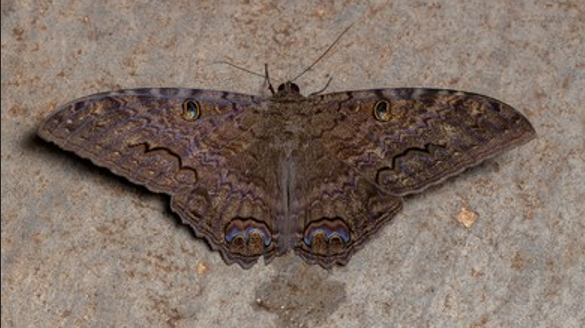

Ascalapha odorata es una polilla nocturna de gran tamaño, caracterizada por sus alas de color marrón oscuro a negro, con patrones ondulados y manchas de tonalidades más claras. Presenta antenas filiformes y hábitos nocturnos. Sus larvas se alimentan principalmente de hojas de leguminosas, mientras que los adultos consumen jugos de frutas fermentadas.